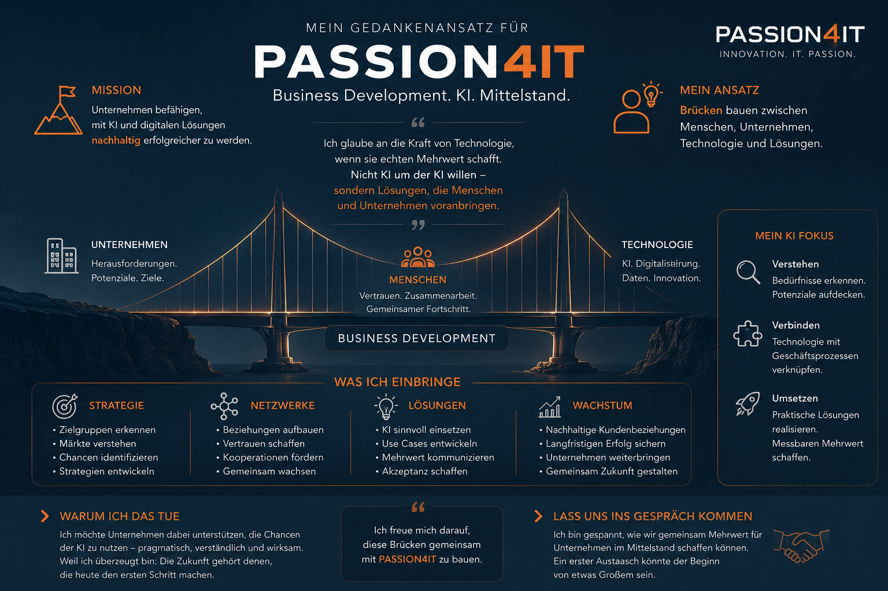

Servus Christian.
Deine Stellenausschreibung hat mich beschäftigt. Nicht weil ich aktiv auf Jobsuche bin, sondern weil sie genau die Themen verbindet, die mich antreiben.
Unser gemeinsamer Nenner
🚀 Business Development
Ich entwickle Märkte, Zielgruppen und Strategien statt nur Vertriebschancen.
🤝 Netzwerke
Vertrauen entsteht vor Vertrieb.
💡 KI & Technologie
IT-Systemkaufmann. KI. Use Cases.
📈 Unternehmerisches Denken
Ich denke vom Problem des Kunden aus.
Ich sehe meine größte Stärke darin, die Brücke zwischen Unternehmen, Technologie und konkretem Nutzen zu bauen.
Mein Weg
IT-Systemkaufmann → 20 Jahre Vertrieb → Wirtschaftsfachwirt IHK → Business Development → KI & Mittelstand → Was könnten wir gemeinsam aufbauen?
Mein Gedankengerüst
Die Grafik fasst meinen Denkansatz zusammen.

Wenn dich dieser Denkansatz anspricht, sollten wir sprechen.
☕ Lass uns sprechen